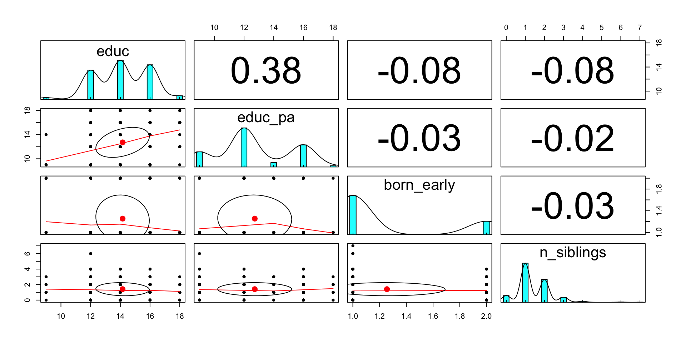

プレゼミ2024
第3回 回帰分析 練習問題
pacmanパッケージを使って、必要なパッケージを読み込み，readr::read_csv()関数でデータを読み込む。 ついでに，dplyr::mutate()関数で変数rent_totalとdistを作成する。
rent\_total = \alpha + \beta_1 floor + \beta_2 age + \beta _3 dist + Other + \varepsilon
model1_1 = lm(rent_total ~ floor + age + dist, data = df)
model1_2 = lm(rent_total ~ floor + age + dist + auto_lock, data = df)
model1_3 = lm(rent_total ~ floor + age + dist + catv, data = df)
results <- list("モデル1" = model1_1, "モデル2" = model1_2, "モデル3" = model1_3)
results |> # 結果の表を作成
msummary(
output = "kableExtra",
stars = TRUE, fmt = '%.4f',
gof_omit = 'RMSE|AIC|BIC|Log.Lik.|F'
) |>
kable_styling(font_size = 24) |>
row_spec(c(9, 11), background = "lightblue")| モデル1 | モデル2 | モデル3 | |
|---|---|---|---|
| (Intercept) | 10.2303*** | 9.1097*** | 9.5265*** |
| (0.3462) | (0.3883) | (0.3634) | |
| floor | 0.1066*** | 0.1042*** | 0.1050*** |
| (0.0071) | (0.0069) | (0.0069) | |
| age | -0.0801*** | -0.0531*** | -0.0547*** |
| (0.0127) | (0.0132) | (0.0133) | |
| dist | -0.0925** | -0.0591* | -0.0849** |
| (0.0281) | (0.0280) | (0.0275) | |
| auto_lockYES | 1.5467*** | ||
| (0.2666) | |||
| catv | 1.6237*** | ||
| (0.3056) | |||
| Num.Obs. | 584 | 584 | 584 |
| R2 | 0.297 | 0.336 | 0.330 |
| R2 Adj. | 0.293 | 0.331 | 0.325 |
| + p < 0.1, * p < 0.05, ** p < 0.01, *** p < 0.001 |
実際の賃貸料rent_totalよりも理論値が最も大きく上回る物件を探す。
model2 <- lm(rent_total ~ floor + age + dist + auto_lock, data = df)
df |>
mutate(
predict = predict(model2), # 理論値
diff = predict - rent_total # 理論値と実際の差
) |>
select(rent_total, predict, diff, floor, age, dist, auto_lock) |>
arrange(desc(diff)) |> # 理論値と実際の差を降順に並び替え
head(1) |> kable(align = 'c')| rent_total | predict | diff | floor | age | dist | auto_lock |
|---|---|---|---|---|---|---|
| 7 | 27.21421 | 20.21421 | 198 | 32 | 14 | NO |
JRダミーと東急ダミーを作成して、モデルに追加する。
df <- df |>
mutate(
JR = ifelse(line == "JR", 1, 0), # JRダミー
Tokyu = ifelse(line == "tokyu", 1, 0) # 東急ダミー
)
# 回帰モデルを作成
model <- lm(rent_total ~ floor + age + dist + terminal + JR + Tokyu, data = df)
# msummaryの出力
list("モデル1" = model) |>
msummary(
output = "kableExtra",
stars = TRUE, fmt = '%.4f',
gof_omit = 'RMSE|AIC|BIC|Log.Lik.|F'
) |>
kable_styling(full_width = FALSE, font_size = 20) |>
row_spec(c(11, 13), background = "lightblue")# 塗りたい行| モデル1 | |
|---|---|
| (Intercept) | 9.3981*** |
| (0.4539) | |
| floor | 0.1167*** |
| (0.0070) | |
| age | -0.0930*** |
| (0.0123) | |
| dist | -0.1098*** |
| (0.0280) | |
| terminal | -0.0622* |
| (0.0242) | |
| JR | 0.9250* |
| (0.3725) | |
| Tokyu | 2.3037*** |
| (0.3540) | |
| Num.Obs. | 584 |
| R2 | 0.359 |
| R2 Adj. | 0.353 |
| + p < 0.1, * p < 0.05, ** p < 0.01, *** p < 0.001 |
busダミーを作成して、モデルに追加する。
df <- df |>
mutate(
bus_dummy = ifelse(bus > 0, 1, 0) # バスダミー
)
lm(rent_total ~ floor + age + dist + terminal + JR + Tokyu + bus_dummy, data = df) |>
msummary(
output = "kableExtra",
stars = TRUE,
fmt = '%.4f',
gof_omit = 'RMSE|AIC|BIC|Log.Lik.|F'
) |>
kable_styling(full_width = FALSE, font_size = 18) |>
row_spec(c(15), background = "lightblue")# 塗りたい行| (1) | |
|---|---|
| (Intercept) | 9.0912*** |
| (0.4693) | |
| floor | 0.1189*** |
| (0.0070) | |
| age | -0.0935*** |
| (0.0123) | |
| dist | -0.0913** |
| (0.0289) | |
| terminal | -0.0496* |
| (0.0247) | |
| JR | 1.1057** |
| (0.3783) | |
| Tokyu | 2.2747*** |
| (0.3528) | |
| bus_dummy | -1.1580* |
| (0.4766) | |
| Num.Obs. | 584 |
| R2 | 0.366 |
| R2 Adj. | 0.358 |
| + p < 0.1, * p < 0.05, ** p < 0.01, *** p < 0.001 |
Rows: 1,272
Columns: 9
$ no <dbl> 117, 117, 117, 118, 118, 118, 120, 121, 121, 121, 122, 122, …
$ size <dbl> 1, 2, 3, 1, 2, 3, 2, 1, 2, 3, 2, 3, 1, 2, 3, 2, 1, 2, 3, 1, …
$ age <dbl> 72.5, 72.0, 74.9, 52.1, 48.0, 39.0, 23.5, 28.5, 28.1, 28.6, …
$ tenure <dbl> 30.7, 24.9, 15.3, 24.5, 6.1, 6.1, 1.5, 3.5, 1.8, 4.9, 6.2, 4…
$ wage <dbl> 368.8, 288.6, 298.9, 329.2, 422.5, 711.9, 227.5, 115.7, 302.…
$ education <dbl> 1, 1, 1, 1, 1, 1, 1, 1, 1, 1, 1, 1, 1, 1, 1, 1, 1, 1, 1, 1, …
$ male <dbl> 1, 1, 1, 1, 1, 1, 1, 1, 1, 1, 1, 1, 1, 1, 1, 1, 1, 1, 1, 1, …
$ lwage <dbl> 5.910254, 5.665041, 5.700109, 5.796666, 6.046189, 6.567937, …
$ ind <dbl> 3, 3, 3, 3, 3, 3, 3, 3, 3, 3, 3, 3, 3, 3, 3, 3, 3, 3, 3, 3, …wage = \alpha + \beta_1 age + \beta_2 D\_size + \beta _3 D\_education + \beta _4 D\_ind + \varepsilon
results <- list(
"model1" = lm(wage ~ age + factor(size) + factor(education) + factor(ind), data = df),
"model2" = lm(lwage ~ age + factor(size) + factor(education) + factor(ind), data = df)
)
results |>
msummary(
output = "kableExtra",
stars = TRUE,
fmt = '%.4f',
gof_omit = 'RMSE|AIC|BIC|Log.Lik.|F'
) |>
kable_styling(full_width = FALSE, font_size = 18) |>
row_spec(c(3), background = "lightblue")# 塗りたい行| model1 | model2 | |
|---|---|---|
| (Intercept) | 230.3202*** | 5.4723*** |
| (15.4175) | (0.0374) | |
| age | 0.9471*** | 0.0021*** |
| (0.2309) | (0.0006) | |
| factor(size)2 | -22.7903** | -0.0712*** |
| (8.6072) | (0.0209) | |
| factor(size)3 | -28.7658*** | -0.0944*** |
| (8.6225) | (0.0209) | |
| factor(education)2 | -6.3279 | 0.0096 |
| (12.0523) | (0.0292) | |
| factor(education)3 | 13.3396 | 0.0858** |
| (12.2146) | (0.0296) | |
| factor(education)4 | 36.0792** | 0.1500*** |
| (12.2805) | (0.0298) | |
| factor(education)5 | 73.3418*** | 0.2584*** |
| (12.2403) | (0.0297) | |
| factor(education)6 | 196.1199*** | 0.5042*** |
| (12.5117) | (0.0303) | |
| factor(ind)2 | -3.1650 | -0.0163 |
| (8.5062) | (0.0206) | |
| factor(ind)3 | 84.2617*** | 0.1879*** |
| (8.6833) | (0.0211) | |
| Num.Obs. | 1272 | 1272 |
| R2 | 0.300 | 0.309 |
| R2 Adj. | 0.295 | 0.304 |
| + p < 0.1, * p < 0.05, ** p < 0.01, *** p < 0.001 |
df <- df |>
mutate(
age2 = age^2
)
res <- lm(wage ~ age + age2 + age*factor(ind) + age2*factor(ind) + factor(size) + factor(education) + factor(ind), data = df)
msummary(res,
output = "kableExtra",
stars = TRUE,
fmt = '%.4f',
gof_omit = 'RMSE|AIC|BIC|Log.Lik.|F'
) |>
kable_styling(full_width = FALSE, font_size = 18)| (1) | |
|---|---|
| (Intercept) | -158.2557** |
| (48.8015) | |
| age | 20.1364*** |
| (2.1882) | |
| age2 | -0.2091*** |
| (0.0231) | |
| factor(ind)2 | -15.8365 |
| (67.1900) | |
| factor(ind)3 | -263.8524*** |
| (70.9384) | |
| factor(size)2 | -18.3640* |
| (7.5495) | |
| factor(size)3 | -27.0388*** |
| (7.5619) | |
| factor(education)2 | -4.6338 |
| (10.5659) | |
| factor(education)3 | 7.8583 |
| (10.7148) | |
| factor(education)4 | 26.9442* |
| (10.7779) | |
| factor(education)5 | 67.4483*** |
| (10.7386) | |
| factor(education)6 | 186.1074*** |
| (10.9836) | |
| age × factor(ind)2 | 0.5227 |
| (3.0380) | |
| age × factor(ind)3 | 14.4195*** |
| (3.1955) | |
| age2 × factor(ind)2 | -0.0044 |
| (0.0319) | |
| age2 × factor(ind)3 | -0.1360*** |
| (0.0335) | |
| Num.Obs. | 1272 |
| R2 | 0.464 |
| R2 Adj. | 0.458 |
| + p < 0.1, * p < 0.05, ** p < 0.01, *** p < 0.001 |
Rows: 1,000
Columns: 72
$ caseid <dbl> 10001, 10002, 10003, 10004, 10005, 10006, 10007, 10008, 10009,…
$ sex <dbl> 1, 1, 1, 2, 1, 1, 2, 1, 2, 1, 2, 1, 2, 1, 2, 2, 2, 2, 1, 2, 2,…
$ ybirth <dbl> 1976, 1972, 1975, 1974, 1978, 1984, 1976, 1975, 1985, 1972, 19…
$ mbirth <dbl> 10, 1, 4, 11, 1, 2, 6, 4, 9, 2, 4, 1, 7, 11, 10, 1, 5, 10, 7, …
$ ZQ03 <dbl> 1, 1, 1, 1, 2, 2, 1, 1, 1, 1, 2, 1, 1, 1, 2, 1, 2, 1, 1, 1, 1,…
$ JC_1 <dbl> 2, 2, 2, 2, 10, 10, 2, 2, 3, 2, 10, 4, 2, 6, 11, 3, 10, 2, 2, …
$ JC_41 <dbl> 12, 9, 9, 7, 88, 88, 8, 9, 5, 8, 88, 8, 10, 8, 88, 5, 88, 10, …
$ ZQ08A <dbl> 4, 6, 6, 6, 6, 6, 6, 5, 1, 6, 6, 4, 6, 6, 4, 6, 6, 6, 4, 4, 5,…
$ ZQ08B <dbl> 1, 2, 6, 1, 2, 1, 4, 2, 1, 1, 1, 3, 1, 5, 3, 2, 1, 1, 3, 1, 1,…
$ ZQ08C <dbl> 3, 2, 6, 1, 2, 2, 1, 2, 1, 2, 2, 4, 1, 2, 3, 2, 1, 1, 4, 5, 6,…
$ ZQ08D <dbl> 4, 4, 3, 5, 4, 6, 5, 4, 4, 5, 6, 5, 6, 5, 4, 5, 4, 5, 4, 5, 6,…
$ ZQ08E <dbl> 4, 6, 6, 1, 1, 3, 1, 4, 1, 6, 1, 4, 6, 6, 3, 2, 1, 6, 6, 6, 6,…
$ ZQ08F <dbl> 4, 6, 6, 1, 2, 6, 4, 5, 4, 6, 1, 4, 6, 6, 3, 2, 2, 6, 4, 6, 6,…
$ ZQ08G <dbl> 5, 6, 4, 4, 5, 6, 4, 4, 5, 5, 1, 5, 5, 6, 4, 3, 1, 6, 5, 5, 6,…
$ ZQ08H <dbl> 3, 5, 6, 2, 1, 6, 4, 4, 4, 4, 2, 5, 4, 4, 3, 2, 4, 6, 2, 6, 4,…
$ ZQ11_A <dbl> 2, 2, 2, 2, 2, 2, 2, 2, 2, 2, 2, 2, 2, 1, 2, 1, 2, 2, 2, 2, 1,…
$ ZQ11_B <dbl> 2, 2, 2, 2, 2, 2, 2, 1, 1, 2, 2, 2, 2, 2, 2, 2, 2, 2, 2, 2, 2,…
$ ZQ11_C <dbl> 2, 2, 2, 2, 2, 2, 2, 2, 2, 2, 2, 2, 2, 2, 2, 2, 2, 2, 2, 2, 2,…
$ ZQ11_D <dbl> 2, 2, 2, 2, 2, 2, 2, 2, 2, 2, 2, 2, 2, 2, 2, 2, 2, 2, 2, 2, 2,…
$ ZQ11_E <dbl> 2, 2, 1, 2, 1, 2, 1, 2, 2, 1, 2, 2, 2, 2, 2, 1, 1, 2, 2, 2, 2,…
$ ZQ11_F <dbl> 2, 1, 1, 2, 2, 2, 1, 2, 2, 1, 2, 2, 2, 1, 2, 1, 1, 2, 1, 2, 1,…
$ ZQ11_G <dbl> 2, 2, 1, 2, 2, 2, 2, 2, 2, 2, 2, 2, 2, 2, 2, 1, 2, 2, 2, 2, 1,…
$ ZQ11_H <dbl> 2, 2, 2, 2, 2, 2, 2, 2, 2, 2, 2, 2, 2, 2, 2, 2, 2, 2, 2, 2, 2,…
$ ZQ11_I <dbl> 2, 2, 2, 2, 2, 2, 2, 2, 2, 2, 2, 2, 2, 2, 2, 2, 2, 2, 2, 2, 2,…
$ ZQ11_J <dbl> 2, 2, 2, 2, 1, 1, 1, 2, 2, 1, 2, 2, 2, 2, 2, 2, 2, 2, 2, 2, 2,…
$ ZQ11_K <dbl> 2, 2, 2, 2, 2, 2, 2, 2, 2, 2, 2, 2, 2, 2, 2, 2, 2, 2, 2, 2, 2,…
$ ZQ11_L <dbl> 2, 2, 2, 2, 1, 2, 1, 2, 2, 2, 2, 2, 2, 2, 2, 2, 2, 2, 1, 2, 2,…
$ ZQ11_M <dbl> 2, 2, 2, 2, 2, 2, 2, 1, 1, 2, 2, 2, 2, 2, 2, 2, 2, 2, 1, 2, 1,…
$ ZQ11_N <dbl> 2, 2, 2, 2, 2, 1, 2, 2, 2, 2, 2, 2, 2, 2, 2, 1, 2, 2, 2, 2, 2,…
$ ZQ11_O <dbl> 2, 2, 2, 2, 2, 2, 2, 2, 2, 2, 2, 2, 2, 2, 2, 2, 2, 2, 2, 2, 2,…
$ ZQ12 <dbl> 2, 2, 4, 3, 4, 2, 3, 4, 4, 3, 4, 4, 3, 5, 3, 4, 3, 3, 3, 3, 3,…
$ ZQ14_1A <dbl> 0, 0, 0, 1, 2, 0, 1, 1, 0, 0, 0, 0, 0, 1, 1, 0, 1, 0, 0, 0, 1,…
$ ZQ14_1B <dbl> 0, 0, 0, 1, 0, 0, 0, 0, 0, 0, 0, 0, 1, 0, 0, 0, 0, 1, 0, 0, 0,…
$ ZQ14_1C <dbl> 1, 0, 0, 0, 0, 1, 0, 0, 1, 0, 0, 0, 0, 1, 0, 1, 0, 0, 1, 1, 0,…
$ ZQ14_1D <dbl> 0, 1, 0, 0, 0, 0, 0, 1, 0, 1, 1, 1, 0, 0, 2, 0, 0, 2, 0, 0, 0,…
$ ZQ23A <dbl> 5, 3, 3, 3, 5, 4, 5, 3, 2, 2, 5, 1, 3, 5, 5, 2, 2, 3, 6, 5, 3,…
$ ZQ23B <dbl> 5, 5, 2, 5, 8, 8, 5, 4, 8, 8, 5, 2, 8, 4, 8, 8, 3, 8, 8, 8, 8,…
$ ZQ23C <dbl> 5, 2, 2, 2, 5, 3, 5, 5, 2, 1, 2, 1, 4, 2, 6, 2, 2, 5, 5, 5, 2,…
$ ZQ23D <dbl> 4, 2, 2, 2, 5, 2, 2, 4, 3, 1, 2, 1, 5, 2, 4, 2, 2, 3, 2, 5, 2,…
$ ZQ24 <dbl> 1, 1, 1, 1, 1, 1, 1, 1, 2, 1, 1, 1, 1, 1, 3, 1, 2, 1, 1, 1, 1,…
$ ZQ25 <dbl> 1, 3, 3, 2, 2, 4, 3, 4, 3, 2, 3, 3, 2, 1, 1, 2, 2, 1, 2, 3, 3,…
$ ZQ26A <dbl> 4, 5, 5, 3, 3, 3, 3, 4, 5, 1, 4, 4, 3, 5, 5, 4, 2, 5, 4, 4, 3,…
$ ZQ26B <dbl> 5, 5, 5, 5, 3, 4, 3, 4, 4, 3, 4, 5, 3, 5, 5, 3, 4, 5, 4, 3, 3,…
$ ZQ26C <dbl> 3, 2, 4, 2, 4, 3, 2, 3, 4, 3, 3, 1, 3, 1, 2, 2, 2, 1, 2, 4, 3,…
$ ZQ26D <dbl> 5, 5, 5, 4, 3, 4, 3, 3, 3, 4, 3, 4, 3, 5, 4, 5, 4, 5, 4, 2, 3,…
$ ZQ26E <dbl> 3, 1, 3, 2, 3, 3, 1, 3, 4, 3, 3, 3, 3, 1, 2, 2, 2, 2, 4, 2, 3,…
$ ZQ26F <dbl> 4, 5, 5, 4, 4, 5, 3, 5, 5, 5, 3, 5, 5, 5, 5, 5, 5, 5, 4, 4, 5,…
$ ZQ30D <dbl> 2, 1, 1, 2, 4, 4, 1, 4, 3, 3, 2, 2, 2, 2, 2, 2, 2, 1, 4, 2, 4,…
$ ZQ35 <dbl> 4, 5, 4, 5, 5, 7, 5, 7, 9, 5, 7, 7, 4, 8, 3, 8, 5, 5, 99, 4, 7…
$ ZQ39A <dbl> 4, 3, 5, 3, 4, 4, 5, 3, 2, 4, 3, 3, 4, 3, 3, 4, 4, 2, 4, 9, 3,…
$ ZQ42 <dbl> 9, 1, 9, 3, 2, 2, 9, 9, 9, 1, 9, 10, 9, 1, 1, 9, 9, 9, 9, 9, 1…
$ ZQ43 <dbl> 2, 1, 4, 3, 2, 3, 3, 1, 4, 1, 2, 4, 3, 2, 2, 2, 4, 4, 1, 3, 4,…
$ ZQ47A <dbl> 6, 9, 6, 6, 1, 2, 7, 6, 4, 5, 1, 8, 2, 6, 1, 4, 1, 6, 8, 7, 5,…
$ ZQ47B <dbl> 5, 5, 3, 8, 99, 15, 9, 4, 15, 15, 7, 5, 15, 1, 15, 15, 6, 99, …
$ ZQ47C <dbl> 8, 10, 6, 9, 99, 10, 10, 7, 14, 8, 7, 9, 14, 6, 10, 14, 6, 14,…
$ ZQ50 <dbl> 2, 2, 2, 2, 1, 1, 2, 2, 1, 1, 2, 2, 1, 2, 1, 1, 2, 1, 1, 1, 1,…
$ ZQ52A <dbl> 2, 2, 2, 2, 8, 8, 1, 1, 8, 8, 2, 1, 8, 2, 8, 8, 2, 8, 8, 8, 8,…
$ ZQ52Y <dbl> 51, 51, 56, 48, 888, 888, 73, 76, 888, 888, 36, 74, 888, 46, 8…
$ ZQ54A <dbl> 1, 1, 3, 6, 8, 8, 6, 2, 8, 8, 6, 1, 8, 1, 8, 8, 4, 8, 8, 8, 8,…
$ ZQ54B <dbl> 2, 2, 5, 1, 8, 8, 5, 2, 8, 8, 6, 1, 8, 1, 8, 8, 6, 8, 8, 8, 8,…
$ ZQ54C <dbl> 9, 2, 3, 5, 8, 8, 5, 3, 8, 8, 6, 3, 8, 2, 8, 8, 6, 8, 8, 8, 8,…
$ ZQ54D <dbl> 9, 4, 2, 4, 8, 8, 5, 4, 8, 8, 6, 3, 8, 3, 8, 8, 4, 8, 8, 8, 8,…
$ ZQ61_A <dbl> 1, 1, 1, 1, 2, 1, 1, 2, 2, 1, 2, 1, 2, 2, 2, 2, 2, 2, 1, 1, 1,…
$ ZQ61_B <dbl> 2, 2, 2, 2, 2, 2, 2, 1, 2, 2, 2, 2, 2, 1, 1, 2, 2, 2, 2, 2, 2,…
$ ZQ61_C <dbl> 2, 2, 2, 2, 2, 2, 2, 2, 2, 2, 2, 2, 2, 2, 2, 2, 2, 2, 2, 2, 2,…
$ ZQ61_D <dbl> 2, 2, 2, 2, 1, 2, 2, 2, 2, 2, 2, 2, 1, 2, 2, 2, 2, 2, 2, 2, 2,…
$ ZQ61_E <dbl> 2, 2, 2, 2, 2, 2, 2, 2, 2, 2, 2, 2, 2, 2, 2, 1, 1, 1, 2, 2, 2,…
$ ZQ61_F <dbl> 2, 2, 2, 2, 2, 2, 2, 2, 2, 2, 2, 2, 2, 2, 2, 2, 2, 2, 2, 2, 2,…
$ ZQ61_G <dbl> 2, 2, 2, 2, 2, 2, 2, 2, 2, 2, 2, 2, 2, 2, 2, 2, 2, 2, 2, 2, 2,…
$ ZQ61_H <dbl> 2, 2, 2, 2, 2, 2, 2, 2, 2, 2, 2, 2, 2, 2, 2, 2, 2, 2, 2, 2, 2,…
$ ZQ61_I <dbl> 2, 2, 2, 2, 2, 2, 2, 2, 1, 2, 1, 2, 2, 2, 2, 2, 2, 2, 2, 2, 2,…
$ ZQ62 <dbl> 3, 2, 2, 4, 1, 2, 1, 3, 3, 2, 3, 5, 3, 2, 2, 3, 2, 4, 3, 2, 1,…教育については、ZQ23Aが回答者、ZQ23Cが父親の通った学校を表しており、
となっている。
ZQ24でその学校を卒業した(1)、中退した(2)、在学中(3)を表している。
家族構成については、
ZQ14_1A : 兄の人数ZQ14_1B : 姉の人数ZQ14_1C : 弟の人数ZQ14_1D : 妹の人数欠損値には99が入っているため、これをNAに変換する必要がある。
回答者の生まれつきはmbirthで記録されている。
1〜12月生まれの人数の人数はこのとおり。
教育水準と卒業を表す変数から、教育年数の変数educを作成する。
df <- df |>
mutate(
educ = case_when(
ZQ23A == 1 & ZQ24 == 1 ~ 9, # 中学校
ZQ23A == 2 & ZQ24 == 1 ~ 12, # 高等学校
ZQ23A == 3 & ZQ24 == 1 ~ 14, # 専修学校
ZQ23A == 4 & ZQ24 == 1 ~ 14, # 短期大学・高等専門学校
ZQ23A == 5 & ZQ24 == 1 ~ 16, # 大学
ZQ23A == 6 & ZQ24 == 1 ~ 18, # 大学院
TRUE ~ NA_real_
)
)
df$educ |> table()
9 12 14 16 18
12 208 278 246 25 父親の教育年数educ_paも同様に作成する。
df <- df |>
mutate(
educ_pa = case_when(
ZQ23C == 1 & ZQ24 == 1 ~ 9, # 中学校
ZQ23C == 2 & ZQ24 == 1 ~ 12, # 高等学校
ZQ23C == 3 & ZQ24 == 1 ~ 14, # 専修学校
ZQ23C == 4 & ZQ24 == 1 ~ 14, # 短期大学・高等専門学校
ZQ23C == 5 & ZQ24 == 1 ~ 16, # 大学
ZQ23C == 6 & ZQ24 == 1 ~ 18, # 大学院
TRUE ~ NA_real_
)
)
df$educ_pa |> table()
9 12 14 16 18
125 322 36 182 10 欠損値を意味する99をNAに変換し、それから兄弟姉妹の数を合計して、n_siblingsを作成する。
1から3月生まれを早生まれとして、born_earlyを作成する。
df_test <- df |>
mutate(born_early = factor(born_early)) |>
select(educ, educ_pa, born_early, n_siblings)
df_test |> summary() educ educ_pa born_early n_siblings
Min. : 9.00 Min. : 9.00 0:745 Min. :0.000
1st Qu.:12.00 1st Qu.:12.00 1:255 1st Qu.:1.000
Median :14.00 Median :12.00 Median :1.000
Mean :14.15 Mean :12.72 Mean :1.407
3rd Qu.:16.00 3rd Qu.:16.00 3rd Qu.:2.000
Max. :18.00 Max. :18.00 Max. :7.000
NA's :231 NA's :325 NA's :1 いろいろな表を作成
本人と親の教育年数の相関係数が少々高め？
回帰分析
res <- list(
"model1" = lm(educ ~ born_early, data = df_test),
"model2" = lm(educ ~ born_early + educ_pa + n_siblings, data = df_test)
)
msummary(res,
output = "gt",
stars = TRUE,
gof_omit = 'RMSE|AIC|BIC|Log.Lik.|F'
) |>
tab_style(
style = cell_fill(color = 'lightblue'),
locations = cells_body(rows = c(3,5,7))
)| model1 | model2 | |
|---|---|---|
| (Intercept) | 14.244*** | 11.225*** |
| (0.076) | (0.348) | |
| born_early1 | -0.339* | -0.200 |
| (0.145) | (0.141) | |
| educ_pa | 0.266*** | |
| (0.025) | ||
| n_siblings | -0.198* | |
| (0.079) | ||
| Num.Obs. | 769 | 673 |
| R2 | 0.007 | 0.156 |
| R2 Adj. | 0.006 | 0.152 |
| + p < 0.1, * p < 0.05, ** p < 0.01, *** p < 0.001 | ||
born_earlyが教育年数に対して有意に負の関係があることから、早生まれだと教育年数が0.339年少ない、といえる。born_earlyの係数は有意ではなく、educ_paとn_siblingsが教育年数に対して有意な影響を持っている。0.266年増え、兄弟姉妹の数が1人増えると、本人の教育年数は0.198年減少する。